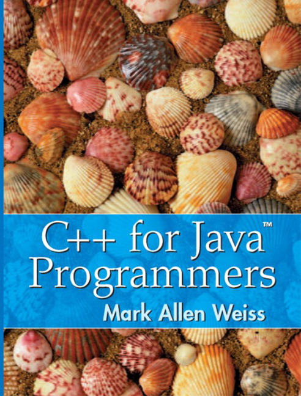

|  |
The recommended text for CS368 is C++ for Java Programmers by Mark Allen Weiss, Pearson Prentice Hall, Upper Saddle River, N.J., 2003. |
Another textbook that some students may prefer is PROGRAMMING Principles and Practice Using C++ by Bjarne Stroustrup, Addison-Wesley, 2014. |